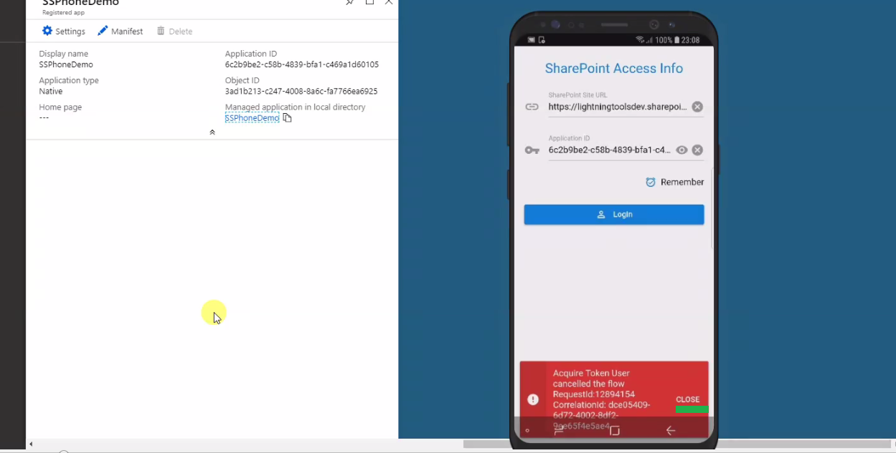

Social Squared Client-Side Web Part (SPFx) Phone Application
Video link: https://lightningtools.wistia.com/medias/6pyfwttevi
Git Repository: https://github.com/Ashot72/Social-Squared-Phone-App
The phone app is built with Quasar Framework which is based on Vue.js https://quasar-framework.org/
With the same codebase you can develop Responsive Single Page Apps, Server-side Render Apps, Regressive Web Apps, Mobile Apps, Electron Apps.
The phone app is still in development and we implemented the layout and login, forums, topics pages only.
You will also see how to authenticate the app via Azure Active Directory. It just takes a minute!!! You register the app, grant required permissions and that’s it!
The phone app is ready to go and it is pretty fast!
You can develop with any Quasar theme, regardless of the platform you are building (Android, IOS). It offers two themes out of box:
Material and IOS. We can test IOS theme on Android during development which is good as it is not always easy to test apps on IOS (watch the video).
The app supports different languages.
We will demonstrate the phone app in conjunction with Social Squared client-side web part (SPFx) which also works in Microsoft Teams.
Figure 1
We defined some forums and topics.
Figure 2
Our web part can also work in Microsoft Teams.
Figure 3
First thing that we should do in order to access the phone app is to specify SharePoint Site URL where the web part is hosted and registered app’s application id.
Let’s start from Application ID and for that we should register an application via Azure Active Directory.
Figure 4
Navigate Admin area of the tenant.
Figure 5
Select Azure Active Directory.
Figure 6
Select Azure Active Directory on azure portal this time.
Figure 7
Click on App registration.
Figure 8
Click on New application registration.

Figure 9
Now you specify Name, Application type and Redirect URI. Application type is Native and Redirect URI must be http://dummy
Figure 10
SSPhoneDemo native app was created.
Figure 11
We can see that there are no admin consented permissions found for the application after the app creation.
Figure 12
Navigate the settings page.
Figure 13
Select Required permissions
Figure 14
Click on Add.
Figure 15
Select an API
Figure 16
Select Office 365 SharePoint Online.
Figure 17
Select two permissions; Read user profiles and Read and write items in all site collections.
Figure 18
Click Done.

Figure 19
Grant Permissions.
Figure 20
We see the specified permissions under Office 365 SharePoint Online and Sign in read user profile permission by default in Windows Azure Active Directory.
We leave that permission as it is as we must specify one permission anyway. As an administrator you can grant consent on behalf of all users
in this directory, ensuring that users will not be required to consent when using the application.
Figure 21
Now, it is time to run our phone app. SharePoint site URL (Figure 3) was the first thing to input and it is https://lightningtoolsdev.sharepoint.com/sites/PhoneDemo
in our case.
Figure 22
Set the value.
Figure 23
Application ID is the app id for newly created SSPhoneDemo application.
Figure 24
Note, Application ID input field can either hide or show the characters entered by the user via clickable icon to toggle the input.
Social Squared SPFx will define a new text field for Application ID so the phone app users can get it from there.
Figure 25
Remember option persists user’s settings and no need to specify them again each time the app is launched.
Each time you change a character in any of the input fields the remember option is grayed out which means that the settings will not be persisted.
Make sure to check remember option after changing an input character.
Figure 26
You are navigated to Microsoft’s Sign In page. Let’s go back this time.

Figure 27
The error message is Acquire Token User cancelled the flow. That is because we decided to go back instead of login. This is how errors are displayed and you have
to explicitly dismiss the alert by tapping close.
Figure 28
Set your email and tap Next.
Figure 29
Enter password and Sign In.
Figure 30
A user redirected to forums page after Sign in. Forums is the first tab.
Figure 31
Tab menu icon located on right-top corner to bring up user’s profile panel.
Figure 32
That is the same info on Office 365 My accounts panel.
Figure 33
Forum’s Last Post section is not expanded by default on the phone app. A user can either expand or collapse it by tapping the arrow. Only one
section can be expanded at a time and previously opened section will collapse.
Figure 34
Pull to refresh the page and forums will be loaded from the server.
Figure 35
When data are retrieved form the server then a loading bar (like YouTube) is displayed telling the user that there is an Ajax call in progress. What we do first
is loading forums from the server and after that load pictures asynchronously. This means that users may first see the forum’s creator initial letter capitalized
(e.g. L for Lightning Tools admin, T for Test user2) then the actual picture.

Figure 36
Forums are loaded, last poster’s picture is loaded too but red loading line is not complete. This means that other last posters’ pictures are still loading.
Loading pictures after the forums is convenient as a user can go through the forums while pictures are loading.
Figure 37
Both header and footer are collapsed (similar to LinkedIn native app) while scrolling up the page (compare to Figure 36). This is good mobile experience as there is more room to breathe.
Figure 38
Forums’ back to top button allows users to smoothly scroll back to the top of the page.
Figure 39
A user can navigate to other pages to view Popular Topics, Recent Activities etc. by means of Social Squared SPFx sidebar icons. Phone app renders them as tabs.
Figure 40
We navigated from forums to topics page. It functions like forums page. Not all pictures have been loaded yet. There are still in progress.
Figure 41
We define Back to top differently on topics’ page as Add new topic red button already occupied the space.
Figure 42
Latest Post section behaves like forums’ Last Post section.
Figure 43
If signed in user does not have a picture specified then phone app will show the initial letter capitalized like T for Test User 2.
Figure 44
It is convenient to navigate to previous page just by tapping the icon located on top-left corner. You are on topics page and see forums icon to navigate to.
Figure 45
Here we navigated from topics page to posts page which is not ready yet. Users can navigate back to topics page by tapping left-top button.
Figure 46
Posts page uses infinite scrolling like Facebook that progressively load new content as the user scrolls up the page.
Figure 47
Call Lightning Tools directly from the app.
Figure 48
Select an app to make a call.
Figure 49
Apps allows you to navigate Lightning Tools web site as well.
Figure 50
Select an app to open Lightning Tools web site.
Figure 51
Let’s create a new forum group.
Figure 52
Create a new forum under newly created forum group.
Figure 53
Pull to refresh and you will see the forum on the phone and it is pretty fast!
Figure 54
Let’s add a new topic via Microsoft Teams tab.

Figure 55
Pull to refresh and the topic rendered on the phone.

Figure 56
We created two topics. Now we are going to rate Test Topic then make sticky and lock.
Figure 57
As the topic is sticky it became the top one (compare to Figure 57).
Figure 58
Tab menu icon located on right-top corner to bring up user’s profile panel where Logout button is located (Note the user’s profile picture is not retrieved yet).
Figure 59
As we already stated you can develop with any Quasar theme, regardless of the platform you are building (Android, IOS). Our app was built with mat option which is material
themes for Android.
Figure 60
This time we are going to build with ios option for IOS.
Figure 61
You see IOS login page differs from Android one (compare to Figure 3).
Apple’s Flat Design vs Google’s Material Design.
Flat design is free from multi-dimensional elements and makes feel like all the objects are laying on a single surface. Material design
released by Google can be said as a branded product with a set of well-defined guidelines and principles. Flat design is a less intuitive
design and users get mixed up due to excessive flatness of objects. In flat design, clickable elements get usually confused with non-clickable
icons and texts. To overcome this problem, material design tries to introduce some skeuomorphism in the most simplified design. Though
material design looks flat, it stays multi-dimensional. In short, material design is an improved version of flat design which lays stress on the
minor details in terms of animations, shades and layers. Material design makes the product feel more intuitive when it comes to navigation
and yet maintain its simplicity.
Figure 62
Profile’s page, IOS theme.
Figure 63
Forums page.
Figure 64
On Material Design theme we placed tabs between Layout header and page view, and on IOS theme between page view and Layout footer.
Figure 65
Let’s login this time with Test user2 account
Figure 66
First, I tap remember icon to make it gray. It this mode neither SharePoint Access Info nor user’s login and password will persist
(Figure 26, Figure 28). We need that as we are going to sign in with another account.
Figure 67
As we use the same SharePoint Access Info, we just check Remember again to keep the specified info. So, first we unchecked remember option to remove both SharePoint Access Info
and signed in user’s email and password and then checked it again to keep SharePoint Access Info. Tap login button and Microsoft’s Sign In page should come next.
Figure 68
We signed in as Test User2.
Figure 69
Test User2 is singed in and you remember that account does not have a profile picture.
Figure 70
Our app supports different languages. Tap settings icon.
Figure 71
Go to General management page.
Figure 72
Select Language and input.
Figure 73
Language setting.
Figure 74
Add language.
Figure 75
Select Deutsch.
Figure 76
Select Deutschland.
Figure 77
Select Set as Default option.

Figure 78
Deutsch is the first option now.
Figure 79
We do not have real entries yet; just appending DE for now.
Figure 80
Forums page.

Figure 81
The phone app in Landscape mode.